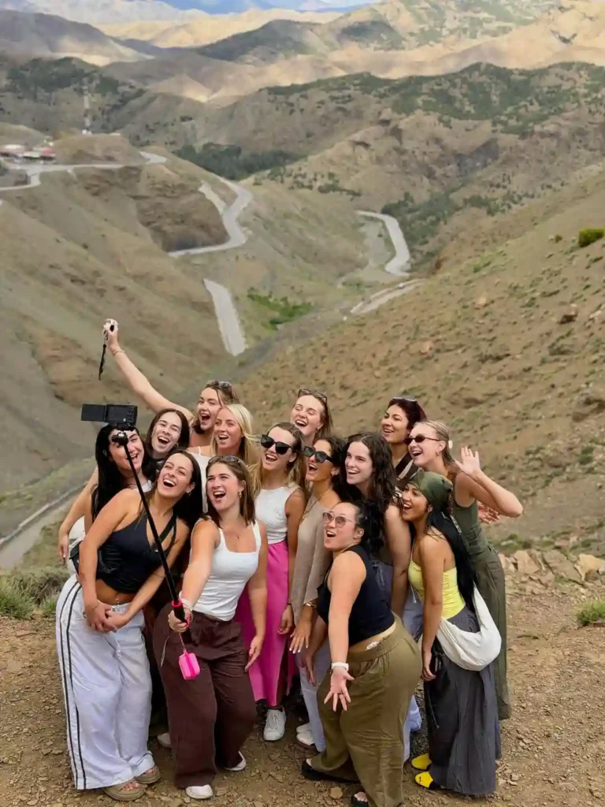
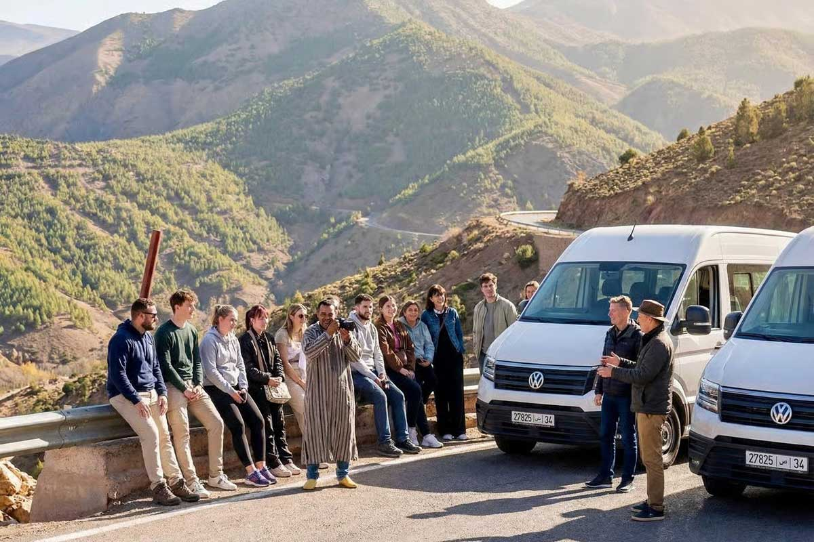
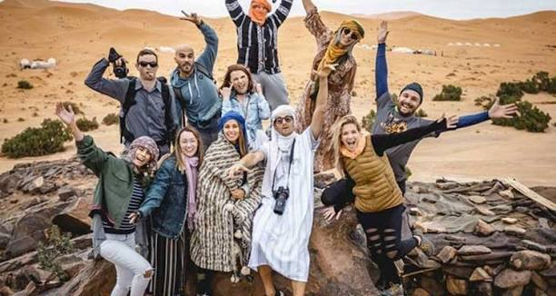

Ciudades, desierto del Sahara, mujeres viajando solas, estafas comunes y transporte: todo lo que necesitas saber para viajar tranquilo, sin miedos infundados ni falsa confianza.

Sí, Marruecos es un país seguro para el turismo. Es uno de los destinos más visitados de África, con una industria turística muy consolidada y millones de viajeros internacionales cada año, incluidas familias, parejas y mujeres viajando solas. Las precauciones necesarias son las mismas que en cualquier ciudad turística concurrida: cuidado con el bolso en las medinas, ignorar a falsos guías y cambiar dinero solo en sitios oficiales. El desierto del Sahara, las ciudades imperiales y la costa forman un circuito turístico muy seguro y bien señalizado.
Sí. Marruecos recibe más de 14 millones de turistas internacionales al año, lo que lo convierte en uno de los destinos más visitados de todo el continente africano. Esa cifra no es casualidad: el país lleva décadas invirtiendo en turismo, con policía turística específica en las ciudades más visitadas, carreteras bien mantenidas entre los destinos principales y una población que, en términos generales, vive del turismo y trata bien al visitante. Es un país de mayoría musulmana con una cultura hospitalaria muy marcada -no es raro que te inviten a tomar un té solo por ser huésped en su país- y una tasa de delitos violentos contra turistas muy baja. Dicho esto, como en cualquier destino, la seguridad no consiste en no tener nunca ningún problema, sino en saber qué precauciones tomar.
Las medinas de Marrakech y Fez están entre los lugares más fascinantes -y más concurridos- del país, y ahí es donde conviene aplicar el mismo sentido común que en cualquier casco histórico lleno de turistas: vigila tu bolso o mochila en las zonas con más gente, como la plaza Jemaa el-Fna al atardecer, no lleves todo tu dinero y documentos encima, y evita mostrar objetos de valor de forma llamativa. El famoso laberinto de callejones de las medinas puede resultar desorientador la primera vez, pero está lleno de comercios y gente en prácticamente todo momento del día, lo que en la práctica lo hace más seguro que solitario. Casablanca, la ciudad más grande y moderna del país, tiene un perfil más de gran ciudad de negocios, con las mismas normas básicas de precaución urbana que aplicarías en cualquier capital europea.
La mayoría de los "sustos" que tienen los turistas en Marruecos no son delitos graves, sino pequeñas estafas o insistencias comerciales molestas. Conociéndolas de antemano, se evitan casi todas:
Sí, y cada año lo hacen miles de mujeres, muchas de ellas primerizas en viajes en solitario. Lo más habitual es recibir piropos, miradas o comentarios en la calle, algo incómodo pero que rara vez pasa de ahí. Algunas recomendaciones que ayudan a viajar más tranquila: vestir de forma algo más cubierta (hombros y rodillas) fuera de las zonas de playa o piscina, evitar callejones vacíos por la noche igual que harías en cualquier ciudad, y responder con seguridad e ignorar a quien insiste demasiado. Muchas viajeras solas optan por unirse a un tour privado con conductor, que elimina la incertidumbre del transporte público y del alojamiento por libre; lo desarrollamos en detalle en nuestra guía sobre cómo vestir como mujer turista en Marruecos.
El desierto de Merzouga es, probablemente, la zona más segura de todo el itinerario turístico. Es una región que vive por completo del turismo desde hace décadas, con campamentos que reciben visitantes todo el año, conductores y guías bereberes con amplia experiencia, y carreteras de acceso en buen estado. No hay tráfico nocturno peligroso ni zonas de riesgo real: el mayor "peligro" suele ser quemarte con el sol o pasar frío de madrugada si no llevas ropa de abrigo (tienes la lista completa en nuestra guía de qué llevar al desierto). Lo mismo aplica a otras zonas rurales del circuito turístico, como el Valle del Dadès o las Gargantas de Todra.
Las carreteras entre las ciudades principales y el desierto están asfaltadas y en buen estado, aunque algunos tramos de montaña, como el puerto de Tizi n'Tichka, tienen muchas curvas y conviene evitarlos de noche. La forma más segura -y la que recomendamos siempre- de moverte entre ciudades es con un conductor-guía privado, que conoce la ruta, los horarios de luz y los tramos que hay que tomar con más precaución, en lugar de conducir tú mismo de noche o depender de transporte público en carretera. Es exactamente el servicio que incluyen todos nuestros tours privados.
No se necesitan vacunas obligatorias para entrar a Marruecos desde la mayoría de países. Las recomendaciones básicas de salud son las habituales en cualquier destino con clima cálido: bebe siempre agua embotellada (no del grifo), ten cuidado con la comida callejera al principio del viaje hasta que tu estómago se adapte, y lleva un botiquín básico con lo esencial. Las farmacias están muy presentes en todas las ciudades y suelen tener personal que habla francés o incluso español. Como en cualquier viaje internacional, recomendamos contratar un seguro de viaje que cubra asistencia médica.
Marruecos es un destino muy habitual para familias con niños: la cultura marroquí es muy hospitalaria con los más pequeños, y experiencias como el paseo en camello, dormir en un campamento de jaimas o explorar una kasbah suelen encantarles. Las mismas precauciones básicas de las ciudades aplican con niños -mantenerlos cerca en las medinas más concurridas-, y un tour privado con horarios flexibles suele ser la opción más cómoda para adaptar el ritmo del viaje a la familia.
El circuito turístico habitual -Marrakech, Fez, Chefchaouen, Casablanca, Tánger, Ouarzazate y el desierto de Merzouga- es completamente seguro y está muy transitado por viajeros de todo el mundo. Las zonas fronterizas del extremo sur, cerca del Sahara Occidental, tienen una situación administrativa distinta y no forman parte de ningún itinerario turístico estándar, por lo que en la práctica no afectan a un viaje normal por el país. Si tienes dudas sobre una zona concreta, consulta siempre las recomendaciones oficiales de viaje de tu país antes de partir.
Sí. Es uno de los destinos turísticos más consolidados y seguros del norte de África, con precauciones básicas similares a las de cualquier destino turístico concurrido.
Sí, miles de mujeres lo hacen cada año. Vestir de forma algo más discreta y viajar con un tour organizado ayuda a que la experiencia sea aún más tranquila.
Sí, es una de las zonas turísticas más seguras y consolidadas del país, con carreteras en buen estado y guías locales con amplia experiencia.
Falsos guías, la excusa de que un lugar está "cerrado hoy", presión en tiendas de alfombras y cambio de moneda informal en la calle. Casi todas se evitan ignorando a desconocidos que se ofrecen sin haberlo pedido.


 3 días
3 días
Con conductor-guía privado de principio a fin, la forma más segura y cómoda de conocer el desierto.
 7 días
7 días
Marrakech, el desierto y Fez en un único circuito, siempre acompañado por el mismo equipo.
 1 día
1 día
Ideal para una primera experiencia en el desierto sin alejarte demasiado de Marrakech.